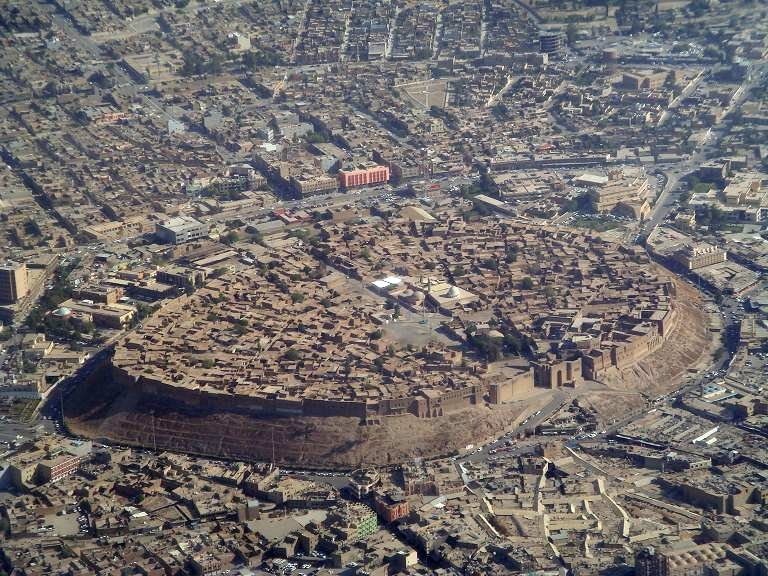

Iraq's north is a completely different world from the plains of Mesopotamia. This eight-day tour goes from ancient Nineveh and the rebuilt Mosul to the spectacular mountains and valleys of Iraqi Kurdistan — a region of dramatic landscapes, ancient monasteries, Yazidi shrines and a remarkable modern story of recovery and tourism.
Erbil's citadel is the world's oldest continuously inhabited settlement. Mosul is being rebuilt after ISIS. Amadiyah is a medieval mountain town that has to be seen. This tour is for travellers who want the Iraq that very few outsiders have visited — the north, in all its complexity and beauty.
Fly into Erbil. Transfer to hotel. Evening walk around Erbil Citadel (Qalat Arbil) — a UNESCO World Heritage Site and the oldest continuously inhabited city on earth.
Full day in Erbil: inside the Citadel, the Erbil Civilisation Museum, the historic bazaars of Qaysari and Langa. Afternoon visit to Mudhafaria Minaret (12th century).
Drive to Duhok province. Visit ancient Assyrian Christian villages in the Nahla valley. Ruins of ancient Assyrian settlements. Overnight Duhok.
Drive up to Amadiyah — a fortified medieval town on a mountain plateau accessible only by a narrow mountain road. Stunning views, ancient walls and local markets. One of the most visually arresting places in Iraq.
Visit Lalish, the holiest site of the Yazidi people — a pre-Abrahamic religious community whose sacred valley contains ancient shrines and temples. A rare opportunity to understand one of the world's oldest religions with a knowledgeable guide.
Drive to Mosul. Visit the ancient site of Nineveh (Assyrian capital, 7th century BC). Tour the Al-Nouri Mosque and its leaning minaret (currently being rebuilt). Walk through the old city of Mosul that is being restored.
Drive to the ancient Assyrian city of Nimrud (9th century BC capital). Visit the palace ruins, winged bull statues (lamassu), and the archaeological site.
Return to Erbil. Morning at leisure. Transfer to Erbil International Airport for departure.